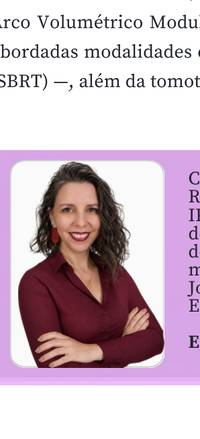

No dia 5 de agosto de 2026, o Conselho Regional de Técnicos em Radiologia da 5ª Região (CRTR-SP), por meio da Coordenação Regional de Educação (CORED-SP), realizou seu 1º Workshop Online. O evento, transmitido ao vivo pela plataforma Zoom com inscrições gratuitas, reuniu profissionais da área de radiologia em torno de dois temas de alta relevância. O evento reuniu mais de 300 inscritos, com média de 45 participantes simultâneos ao longo da transmissão.
A programação contou com duas palestras. A professora Mestre Carolina Baione abordou a evolução das modalidades radioterápicas, da teleterapia convencional às tecnologias de alta precisão. Em seguida, a professora Aparecida de Fátima apresentou os desafios e avanços tecnológicos na mamografia contrastada na era da IA.
A radioterapia acompanha uma trajetória contínua de evolução tecnológica em busca de maior precisão na administração da dose, melhor cobertura dos volumes-alvo e maior proteção dos tecidos sadios. A apresentação iniciou pela radioterapia convencional bidimensional (2D). A evolução para a radioterapia conformacional tridimensional (3D) possibilitou o planejamento a partir de imagens de tomografia. Na sequência, foram apresentadas técnicas que ampliaram essa capacidade: a Radioterapia de Intensidade Modulada (IMRT), a Terapia em Arco Volumétrico Modulado (VMAT), a Radiocirurgia Estereotáxica (SRS) e a Radioterapia Estereotáxica Corporal (SBRT), além da tomoterapia.
